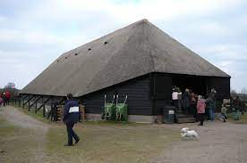
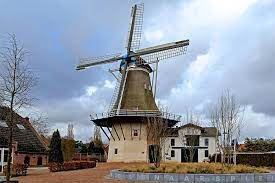

In zijn eerste naamsvermelding uit de 9e of 10e eeuw heette Ermelo Irminlo
De Romeinen legden nabij het huidige Ermelo een tijdelijk marskamp aan, waarschijnlijk in de 2e eeuw
na Christus.
In het gebied van de gemeente Ermelo ligt het kasteel Staverden, een landgoed met stadsrechten
Vanaf 1882 had Ermelo een station aan de Centraalspoorweg tussen Amersfoort en Zwolle
In 1972 werd de gemeente in twee delen verdeeld: de gemeente Nunspeet en een nieuwe gemeente Ermelo.
Schaapskooi Schapedrift
Bij de gemeenteraad van Ermelo leefde de
wens om de Ermelosche Heide te gaan onderhouden middels een schaapskudde. Om dit mogelijk te maken
werd in 1999 Stichting Schapedrift opgericht. In 2003 werd gestart met de bouw van de schaapskooi en
het bezoekerscentrum aan de rand van de Ermelosche Heide. Er werd gebruik gemaakt van het hout dat
uit de bossen in de directe omgeving komt.
Het ontwerp van de schaapskooi is gebaseerd op de van oudsher op de Veluwe voorkomende
schaapskooien. De kooi heeft een oppervlakte van 400 m2 en is daarmee een van de grotere
schaapskooien van Nederland. De kooi biedt ruimte aan de kudde die uit gemiddeld 300 schapen
bestaat. Tegenwoordig overschrijden we jaarlijks de magische grens van 100.000 bezoekers.
Bezoekerscentrum en terrein kregen daarom recentelijk een opknapbeurt om deze enorme aantallen te
kunnen verwerken. Het bezoekerscentrum werd begin 2019 heropend, kreeg een nieuw ingedeelde
zolderverdieping die nu dienst doet als workshoplocatie en vergaderruimte, en een kantoor.
Op het terrein zorgt een grote stretchtent voor de nodige bescherming tegen regen en zon en in de
kapschuur, voorzien van zonnepanelen, is een volwaardig herdersverblijf te vinden waar onze herders
tevens kunnen overnachten.
“De schaapskooi van Ermelo” is bekend bij iedereen in de regio en vele dagjesmensen en toeristen uit
binnen- en buitenland. Het terras is een heerlijke plek om een tijdje te pauzeren van een wandeling
of fietstocht, genietend van het uitzicht op de heide en wellicht de kudde die net terug komt van de
hei.
Molen De Koe
Molen de Koe is een achtkantige
stellingmolen. Met als functie korenmolen. De molen heeft naast het malen van graan ook
gefunctioneerd als pelmolen en eekmolen.
De oudste tekenen van leven.
Eeuwenlang is niet overdreven, want al een kleine 600 jaar geleden beschikte dit dorp over een
molen. Dat weten we door een bewaard gebleven lijst van bezittingen van de Sint Catharinavicarie.
Deze vicarie bestond mogelijk al in 1280 en bezat nogal wat grond in en om Ermelo, maar ook in
Hulshorst en Leuvenum. In 1423 stelde de abt van de Sint Paulusabdij in Utrecht een akte op waaruit
blijkt dat de molen in Ermelo gebouwd was ope een stuk grond dat aan de vicarie toebehoorde. Wanneer
dat gebeurd is, weten we niet. We houden het er maar niet op dat dit tussen 1280 en 1423 is geweest.
Jaarlijks betalen
De eigenaar van de molen had een vorm van erfpacht of recht van opstal en moest aan de vicaris
jaarlijks 18 mud rogge betalen. De akte maakt er melding van dat de molen in de laatste oorlog was
verbrand. Met deze laatste oorlog werd de strijd bedoeld tussen de Geldersen en de Utrechtenaren.
Die had vooral bestaan uit strooptochten op de Veluwe. Van plaatsen als Putten, Barneveld en Ede is
bekend dat ze deels waren platgebrand en in 1421 is dat Ermelo ook overkomen. De molen moet hiervan
toen ook slachtoffer zijn geworden. De abt van de Utrechtse abdij gaf toestemming om de molen te
herbouwen op de andere plaats, mits dit weer gebeurde op een stuk grond van de vicarie. De molenaar
moest jaarlijks blijven betalen, zoals dat in het verleden ook het geval was. Niet voor het laatst
werd de molen dus in of kort na 1423 verplaatst.